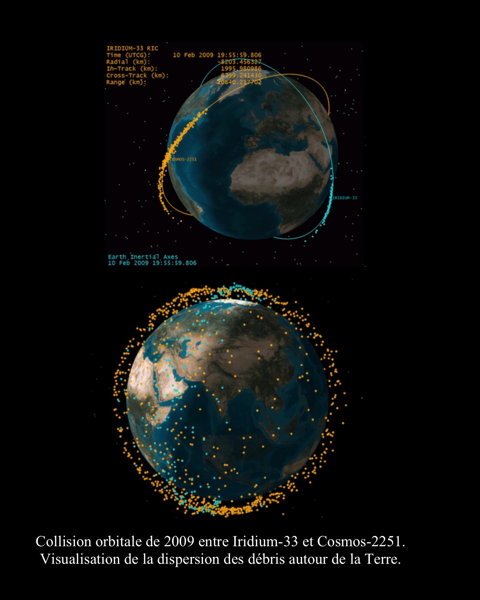

Collisions accidentelles
L’une des principales sources de débris spatiaux provient des collisions accidentelles entre objets en
orbite.
Le premier satellite endommagé par un débris fut le satellite français CERISE en 1996. Un petit fragment
issu d’un
ancien étage de fusée Ariane l’a percuté à très grande vitesse, modifiant son orbite et générant de
nouveaux débris. Cet
événement a montré qu’un objet de quelques centimètres suffit à provoquer de sérieux dégâts.
L’accident le plus marquant survient en 2009, lorsque le satellite américain Iridium-33 entre en
collision avec le satellite
russe Kosmos-2251, à près de 39 000 km/h. Cette collision a détruit un satellite
opérationnel, créé plusieurs
milliers de fragments et a dispersé les débris sur différentes orbites. Aujourd’hui encore, une grande
partie de ces fragments tourne autour de la
Terre, et certains ont une durée de vie de plusieurs décennies.
Un seul accident peut paraître anodin, mais peut en réalité polluer l’espace pour plusieurs générations.
